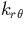
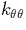
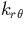
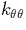

We use a Musgrave-Pople (MP) potential fitted to results from AIMPRO calculations when determining LVMs. The potential can be used to calculate bulk phonon dispersion curves (see Section 4.3). However it is primarily used by our group to determine the energy double derivative terms in the dynamical matrix for bulk Si atoms, since to calculate all of these from first principles would be too time consuming. For this reason I describe here the MP potential, although `stand-alone' O in Si calculations are normally performed using either the Jiang-Brown[30] or Stillinger-Weber[33] potentials.
The Musgrave-Pople potential [34] is a three- and four- body potential made up of bond stretch and bond bending terms. It is given for atom i by the formula
Here  and are the changes in the
length of the i-j bond and angle between the i-j and i-k bond
respectively (see Figure 2.3), and the summation is
over the nearest neighbours j, k, and l. r0 is the
equilibrium bond length and is often set to be the experimental value.
The coefficients kr,
and are the changes in the
length of the i-j bond and angle between the i-j and i-k bond
respectively (see Figure 2.3), and the summation is
over the nearest neighbours j, k, and l. r0 is the
equilibrium bond length and is often set to be the experimental value.
The coefficients kr,  , , krr, and
 are defined in Table 2.8.2.
, , krr, and
 are defined in Table 2.8.2.
| Coefficient | Description |
| kr | bond stretch |
| bond bending | |
| stretch-bend interaction | |
| krr | stretch-stretch interaction |
| bend-bend interaction |